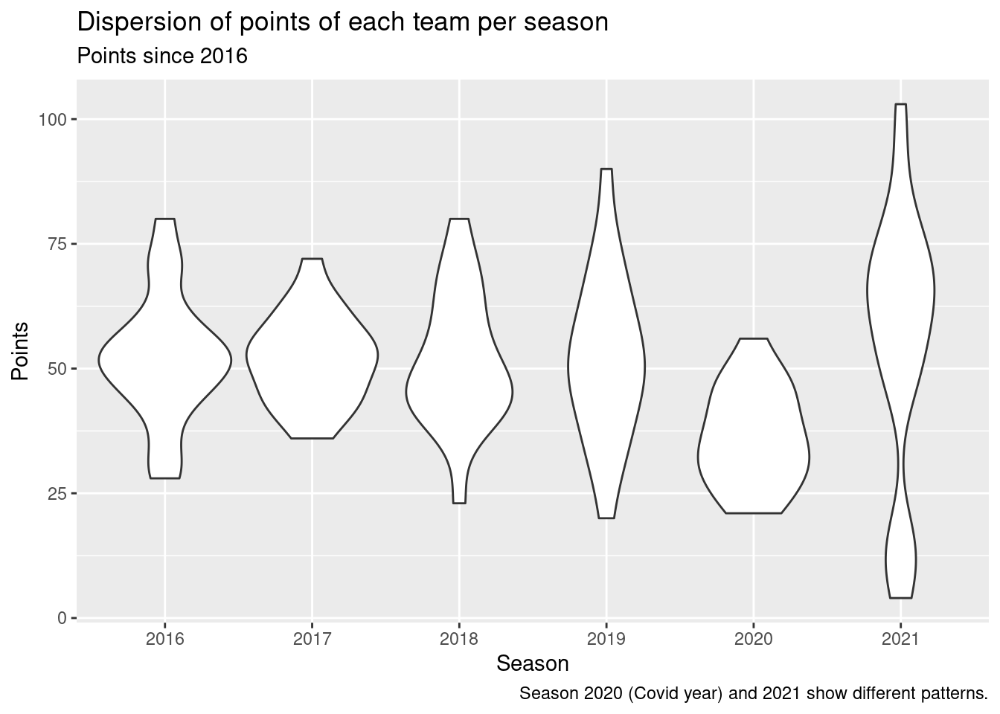
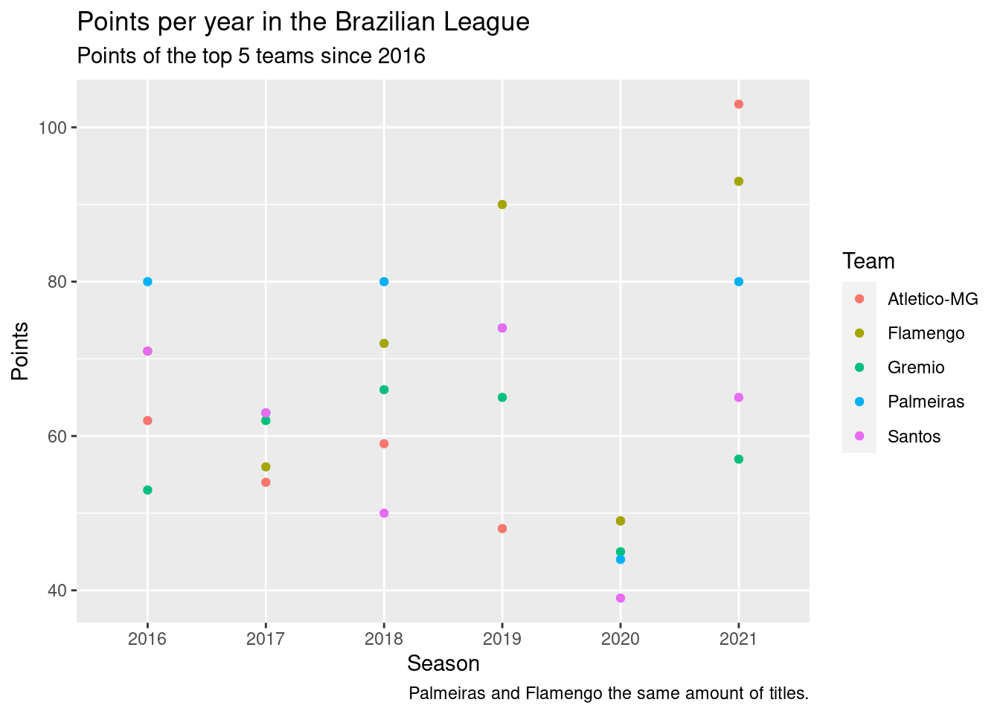
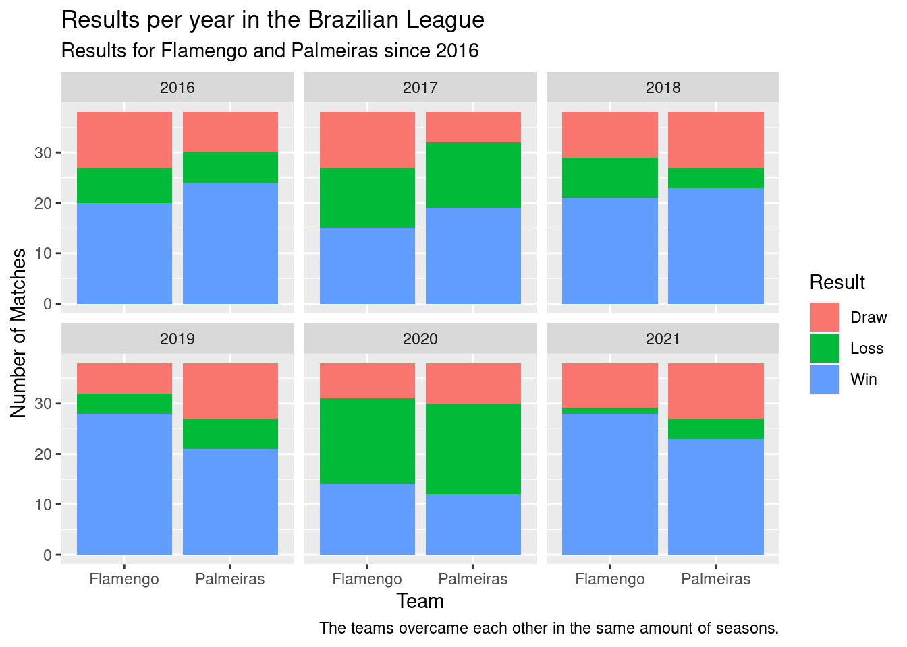

library(tidyverse)Data Analysis
One of the things I am passionate about is soccer, both playing and watching. My favorite team is Palmeiras (and it should be your favorite team too)! In the past three years, we won two South American Cups (2020 and 2021), one Brazilian Cup (2020), and one Brazilian League (2022). If this information is not enough to make you believe this is the best team in the world, I will use the information of the past Brazilian League to show how Palmeiras stands out against the other teams.
This analysis was made to anyone who knows what soccer is! The data used was collected by Adão Duque and it is available on his github repo and also on kaggle. It shows the information of the 7645 Brazilian League matches between the years of 2003 and 2021. In addition, it also presents some statistics for these games. A file called Legenda.txt includes the dictionary for the data (Duque 2018).
First, we load the data for the matches, select and rename (to English) the columns used in this data and select the last 6 years.
matches <- read_csv("data/br/campeonato-brasileiro-full.csv", show_col_types = FALSE) %>%
select(c(data, mandante, visitante, vencedor, mandante_placar, visitante_placar)) %>%
rename(date = data,
home = mandante,
away = visitante,
winner = vencedor,
home_score = mandante_placar,
away_score = visitante_placar) %>%
filter(date > "2016-01-01")
knitr::kable(head(matches))| date | home | away | winner | home_score | away_score |
|---|---|---|---|---|---|
| 2016-05-14 | Palmeiras | Athletico-PR | Palmeiras | 4 | 0 |
| 2016-05-14 | Flamengo | Sport | Flamengo | 1 | 0 |
| 2016-05-14 | Atletico-MG | Santos | Atletico-MG | 1 | 0 |
| 2016-05-14 | Coritiba | Cruzeiro | Coritiba | 1 | 0 |
| 2016-05-15 | Santa Cruz | Vitoria | Santa Cruz | 4 | 1 |
| 2016-05-15 | Botafogo-RJ | Sao Paulo | Sao Paulo | 0 | 1 |
Now, we will create a column for the team and the condition it player. Then we will create columns for the number of points awarded in each game. If a team wins it gets 3 points, if it draws it gets 1 point, if it looses 0 points. We will also create a column for the season (year).
matches_transformed <- matches %>% select(date, home, away, winner) %>%
pivot_longer(cols = c(home, away), values_to = "team", names_to = "location") %>%
mutate(points = case_when(winner == team ~ 3,
winner == "-" ~ 1,
TRUE ~ 0),
victory = case_when(winner == team ~ 1,
TRUE ~ 0),
draw = case_when(winner == "-" ~ 1,
TRUE ~ 0),
year = format(date, "%Y"))
knitr::kable(head(matches_transformed))| date | winner | location | team | points | victory | draw | year |
|---|---|---|---|---|---|---|---|
| 2016-05-14 | Palmeiras | home | Palmeiras | 3 | 1 | 0 | 2016 |
| 2016-05-14 | Palmeiras | away | Athletico-PR | 0 | 0 | 0 | 2016 |
| 2016-05-14 | Flamengo | home | Flamengo | 3 | 1 | 0 | 2016 |
| 2016-05-14 | Flamengo | away | Sport | 0 | 0 | 0 | 2016 |
| 2016-05-14 | Atletico-MG | home | Atletico-MG | 3 | 1 | 0 | 2016 |
| 2016-05-14 | Atletico-MG | away | Santos | 0 | 0 | 0 | 2016 |
We will visualize the point dispersion by team in each of the seasons.
matches_transformed %>%
group_by(year, team) %>%
summarize(sum_points = sum(points)) %>%
ggplot(aes(x=year, y=sum_points)) +
geom_violin() +
labs(title="Dispersion of points of each team per season",
subtitle="Points since 2016",
caption="Season 2020 (Covid year) and 2021 show different patterns.",
x="Season", y="Points")
Now, we will see the top 5 teams per points. This information will be useful to filter the data when plotting the scores by team, since showing all 20 teams would cause confusion.
matches_transformed %>%
group_by(team) %>%
summarize(sum_points = sum(points)) %>%
arrange(desc(sum_points)) %>%
top_n(5) %>%
knitr::kable()| team | sum_points |
|---|---|
| Flamengo | 431 |
| Palmeiras | 421 |
| Atletico-MG | 375 |
| Santos | 362 |
| Gremio | 348 |
The previous information might mislead you into thinking that Flamengo is the best team, but this is not true since one team can score a lot of points in one year and not as much in the others. That is where data visualization comes in.
matches_transformed %>%
group_by(team, year) %>%
summarize(sum_points = sum(points)) %>%
filter(team %in% c("Palmeiras", "Flamengo", "Atletico-MG", "Santos", "Gremio")) %>%
ggplot(aes(x=year, y=sum_points, color=team)) +
geom_point() +
labs(title="Points per year in the Brazilian League",
subtitle="Points of the top 5 teams since 2016",
caption="Palmeiras and Flamengo the same amount of titles.",
x="Season", y="Points", color="Team")
In this period, Palmeiras and Flamengo won the league twice. Therefore, they are the most successful teams in the league and will be the focus of this analysis. Now we plot the percentage of wins, draws and losses.
Note
In 2017 another team won the league, but it was not good enough to be on the top 5.
matches_transformed %>%
group_by(team, year) %>%
summarize(n_victories=sum(victory), n_draws=sum(draw)) %>%
mutate(n_losses=(38-n_victories-n_draws)) %>% # there are 38 games in total
filter(team %in% c("Palmeiras", "Flamengo")) %>%
pivot_longer(c(n_victories, n_draws, n_losses), values_to="n_results", names_to="results") %>%
ggplot(aes(x=team, y=n_results, fill=results)) +
geom_bar(position="stack", stat = "identity") +
facet_wrap(. ~ year) +
labs(title="Results per year in the Brazilian League",
subtitle="Results for Flamengo and Palmeiras since 2016",
caption="The teams overcame each other in the same amount of seasons.",
x="Team", y="Number of Matches", fill="Result") +
scale_fill_discrete(labels=c('Draw', 'Loss', 'Win'))
Both teams seem to be equal, with Palmeiras better in the first three years and Flamengo in the last ones.
Palmeiras was the champion of the Brazilian League this year (GE 2022). It was also ahead of Flamengo by 19 points (“2022 Campeonato Brasileiro Série a” 2022). Therefore, considering all seasons since 2016, Palmeiras is the team with the highest cummulative number of points.
| Team | Points |
|---|---|
| Palmeiras | 81 |
| Internacional | 73 |
| Fluminense | 70 |
| Corinthians | 65 |
| Flamengo | 62 |

The analysis showed that Palmeiras and Flamengo have been the best Brazilian teams since 2016. They have had similar aspects in different statistics, such as the number of victories and points. However, Palmeiras overcame Flamengo in the past championship by winning it and having 19 points of advantage.
Important
In 2022, Palmeiras won the Brazilian League and Flamengo won the Brazilian Cup. Next year, they will play the Brazilian Super Cup, a two-game tournament to decide who deserves the trophy for the 2022 year.
Note
List of functions used:
- dplyr
read_csv
select
rename
filter
pivot_longer
mutate
group_by
summarize
arrange
- ggplot2
geom_violin
geom_point
geom_bar
References
“2022 Campeonato Brasileiro Série a.” 2022. Wikipedia. Wikimedia Foundation. https://en.wikipedia.org/wiki/2022_Campeonato_Brasileiro_S%C3%A9rie_A.
Duque, Adao. 2018. “Brasileirao Dataset.” GitHub. https://github.com/adaoduque/Brasileirao_Dataset.
GE. 2022. “É Campeão! Palmeiras Conquista o Título Do Brasileirão Após Derrota Do Inter Para o América-MG.” Ge. https://ge.globo.com/futebol/times/palmeiras/noticia/2022/11/02/e-campeao-palmeiras-conquista-o-titulo-do-brasileirao-apos-derrota-do-inter-para-o-america-mg.ghtml.